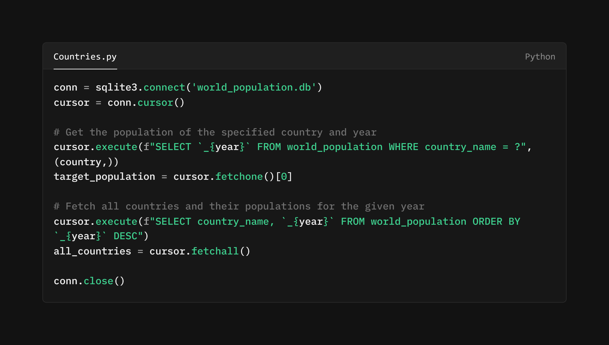

In this lesson, we will look at some world population data publish by the World Bank. We will learn how to narrow down our results by using the ORDER BY clause to sort our data in ascending or descending order. We will also use the LIMIT clause to restrict the number of rows returned by our query. We'll cover the following:
 ORDER BY and LIMIT:
Bringing Order to Chaos
ORDER BY and LIMIT:
Bringing Order to Chaos
In the realm of data retrieval, order and brevity can be invaluable virtues. Imagine sifting through a sprawling record of the world's population with entries haphazardly arranged and no end in sight. The ORDER BY and LIMIT clauses in SQL provide the means to impose order and conciseness on your query results, transforming potential chaos into manageable information.
ORDER BY: Arranging Your
Data
The ORDER BY clause allows you to sort your results based on one or more columns. This is akin to arranging a world population register by country name, population, or any other relevant metric. By specifying the column and the desired sort order (ASC for ascending, DESC for descending), you can bring a sense of structure to your output.
LIMIT: Trimming the Fat
The LIMIT clause, on the other hand, allows you to restrict the number of rows returned by your query. This is particularly useful when dealing with a large population dataset where retrieving all rows would be impractical or overwhelming. By specifying a LIMIT value, you can focus on a specific subset of the data.
Together, the ORDER BY and LIMIT clauses provide a powerful combination for managing and presenting your data in a clear and concise manner, bringing a sense of calm order to the potentially overwhelming world of information retrieval.
We will return to DB Browser and the execute SQL tab to explore ordering data. Let's start by exploring the database to get a feel for the data.
 Task: Exploring the World
Population Database
Task: Exploring the World
Population Database
SELECT * FROM population_dataOnce you have familiarised yourself with the data, we can move on to sorting the results.
A Quirk of SQL Naming
Conventions
You might have noticed a slight oddity in our database: the fields representing years like 1961 are named like "_1961" rather than simply "1961". This isn't a typographical error, but rather a necessity imposed by the rules of SQL naming conventions.
In SQL, names (whether for tables or fields) cannot begin with a number. This seemingly arbitrary rule is rooted in the way SQL parses and interprets your commands. A name starting with a number could be confused with a numeric value, leading to syntax errors or unexpected behaviour.
To circumvent this constraint, we adopt the convention of prefixing such names with an underscore. This simple addition ensures that the name is valid while still conveying its intended meaning.
Sorting Data with ORDER BY
You will have noticed that the database is ordered alphabetically by country name. However, we may prefer to oder the data by population in ascending or descending order. Let's try this out.
Task: Sorting Data by Population
SELECT country_name, _1961 FROM world_population ORDER BY _1961 ASCSELECT country_name, _1961 FROM population_data ORDER BY _1961 DESCBy using the ORDER BY clause, you can arrange your data in a way that makes it easier to interpret and analyse. Whether you're sorting by population, country name, or any other relevant metric, this feature allows you to bring order to the chaos of raw data.
Deconstructing the Query
Let's break down this SQL query piece-by-piece:
SELECT country_name, _1999FROM world_populationORDER BY _1999 DESCORDER BY _1999DESC
If we were to replace DESC with ASC (short
for "ascending"), the results would be sorted in the opposite order,
from lowest population to highest. This would give us a list of
countries starting with the least populous in 1999 and ending with
the most populous.
Task: Refining Your Query
Combine your new knowledge WHERE clauses with ORDER BY to find run the following queries. As previously, attempt this without looking at the answers, or adopt a 'look, cover, query, check' approach.
SELECT country_name, _1990, _2023 FROM world_population ORDER BY _2023 ASCSELECT country_name, _2000, _2010 FROM world_population ORDER BY _2010 DESCSELECT country_name, _2023 FROM world_population WHERE _2023 > 500000 ORDER BY _2023 ASCSELECT country_name, _1990, _2023 FROM world_population WHERE _2023 > 100000000 ORDER BY _2023 DESCIn addition to sorting your data, you may also want to limit the number of rows returned by your query. This can be useful when dealing with large datasetsor when you only need to focus on a specific subset of the data. Let's explore how to use the LIMIT clause to achieve this.
LIMIT: Exercising
Restraint in Data Retrieval
When querying a database, especially one as extensive as a world population database, it's often impractical and inefficient to retrieve every single record. The LIMIT clause in SQL provides a mechanism for exercising restraint, allowing you to specify the maximum number of rows you wish to retrieve.
Think of LIMIT as a gatekeeper, allowing only a select few to pass
through. By appending
LIMIT 10 to your query, you instruct the database to
return no more than 10 rows, regardless of how many records match
the query's criteria.
This can be particularly useful for:
Let's put this into practice by limiting the number of rows returned by a query.
Task: Limiting Results with
LIMIT
SELECT country_name, _2023 FROM world_population ORDER BY _2023 DESC LIMIT 5SELECT country_name, _2023 FROM world_population ORDER BY _2023 ASC LIMIT 10By combining the ORDER BY and LIMIT clauses, you can refine your queries to focus on specific subsets of data. Whether you're retrieving the top N results, previewing a small sample of data, or testing your query logic, these features provide a powerful means of controlling the output of your queries.
Task: Putting It All
Together
Now that you've learned how to sort and limit your query results, let's put your skills to the test. Run the following queries to practice using ORDER BY and LIMIT together:
SELECT country_name, _2023 FROM world_population ORDER BY _2023 DESC LIMIT 3SELECT country_name, _2023 FROM world_population ORDER BY _2023 ASC LIMIT 5SELECT country_name, (_2023 - _1990) AS population_growth FROM world_population ORDER BY population_growth DESC LIMIT 5That last one was a stinker - we will get to aggregate functions in the future, but here is a quick explanation of how AS works.
AS: Renaming Columns
The AS keyword in SQL allows you to rename the columns in your query results. This can be useful for:
In the query above, we used AS population_growth to
rename the calculated column representing the difference in
population between 1990 and 2023. This
alias provides a clear and concise
label for the data, making it easier to understand the results of
the query.
Well done! You've mastered the art of ordering and limiting your SQL queries. Now, let's put your newfound skills could be applied by creating a simple GUI that allows users to input a country name and retrieve a list of countries with a similar population. We'll use Python's Tkinter library to build the interface and execute the SQL queries. 
This code has been written for you and is found attached in lesson resources. For now, notice how the SQL query is constructed in the code.
LIMIT in SQL vs.
Fetching in Python
You will recall that the
LIMIT clause in SQL allows you to
restrict the number of rows returned by a query. In this Python
snippet, we achieve a similar outcome through the
fetchone() method.
While the SQL query
SELECT `_{year}` FROM world_population WHERE country_name =
?
could potentially return multiple rows if multiple countries had
the same name, cursor.fetchone() retrieves only the
first row. This effectively acts
like a LIMIT 1 clause,
ensuring that we obtain only a single population value for the
specified country and year.
If we wanted to retrieve more than one row, we could use the
fetchmany(n) method (where 'n' is the desired number
of rows) or fetchall() to retrieve all rows. These
methods provide flexibility in how
we handle the results of our SQL queries within Python.
All that is left to do is to run the code and see the results. Run the attached countries.py file and input a country name to see the results.
Task: Running the GUI
In this lesson, we explored the power of the ORDER BY and LIMIT clauses in SQL, which allow you to sort and restrict the results of your queries. By using ORDER BY, you can arrange your data in ascending or descending order based on one or more columns, enhancing the organization and readability of your output. The LIMIT clause enables you to focus on a specific subset of the data by restricting the number of rows returned by your query. Together, these clauses provide a powerful combination for managing and presenting your data in a clear and concise manner, bringing a sense of calm order to the potentially overwhelming world of information retrieval.